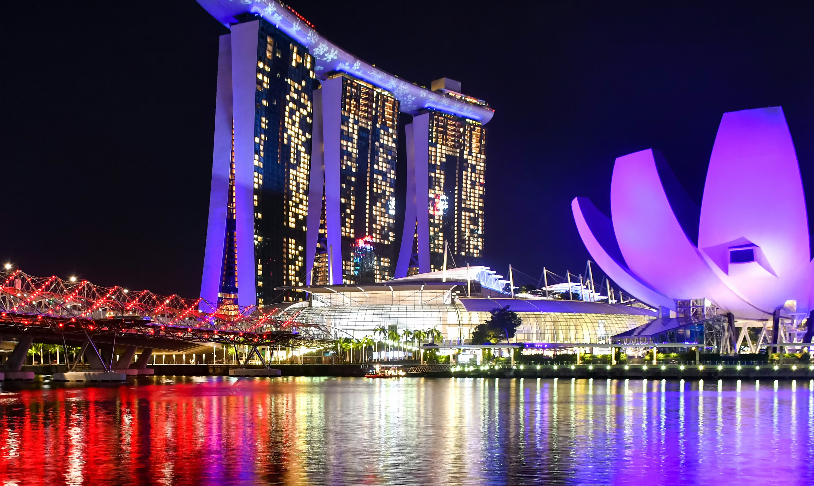

O turismo em Singapura se consolidou principalmente a partir da segunda metade do século XX, quando o país deixou de ser uma colônia britânica e passou a investir pesado em infraestrutura, segurança e planejamento urbano. Sem grandes recursos naturais, o governo apostou em transformar a cidade em um hub global de negócios e turismo, com foco em limpeza, eficiência e inovação. Ao longo das décadas, a estratégia funcionou: Singapura se posicionou como uma das cidades mais modernas e organizadas do mundo, atraindo tanto turistas quanto investidores.
Em termos de números, Singapura costuma receber entre 15 e 19 milhões de visitantes internacionais por ano, número impressionante considerando sua pequena área territorial. A receita turística frequentemente ultrapassa US$ 20 bilhões anuais, sendo uma das principais fontes de renda do país. A taxa de retorno de turistas é alta, impulsionada pela segurança, facilidade de locomoção e experiência premium. A cidade também aparece consistentemente entre os destinos mais competitivos e eficientes do mundo em rankings globais.
Entre as principais atrações estão o icônico Marina Bay Sands, com sua piscina de borda infinita, e o futurista Gardens by the Bay. Outros destaques incluem a ilha de Sentosa, o bairro cultural de Chinatown e o moderno skyline da baía. A cidade também se destaca pela gastronomia diversificada, misturando influências chinesas, indianas e malaias.


Para voltar à pagina inicial, clique aqui.